To holistyczna metoda oparta o doświadczenie klienta.
Konstelacje zajmują się porządkowaniem systemów (rodziny,
zespołu, firmy). Celem jest współdziałanie i kooperacja.
Klient, poprzez zadanie pytania, deklaruje w jednym zdaniu czym chce zająć się na warsztacie, np.: "Co stoi
mi na drodze do sukcesu i zarabiania pieniędzy?".
Następnie ustawiający wybiera reprezentantów (osoby,
figurki playmobile sets).
Reprezentanci pokazują ciałem, miną, zachowaniem, jakie są relacje między elementami
systemu. Od razu widać które elementy współdziałają, mają więź, a które walczą ze sobą, nienawidzą się i
wykluczają.
Każdy system składa się z iluś elementów. Jak ręka mająca 5 palców. Kiedy są wszystkie elementy, wtedy system funkcjonuje sprawnie. Gdy któregoś palca brakuje lub palce rywalizują ze sobą, system (ręka) nie może funkcjonować sprawnie. Konstelacje służą sprawdzeniu, co stoi na przeszkodzie by osiągnąć cel.
W konstelacjach działa ujawnienie niewidocznych, nieświadomych uwikłań i nieporządków. To jak gra w otwarte karty (pokera). Po odkryciu kart, nie można już blefować.
Konstelacje są techniką projekcyjną, nie ma w nich procedur i analizy. Od razu pokazuje się nam główny problem. Jest techniką doświadczalną, nie ma potrzeby „wierzyć” (czyli opierać się na tym, co ktoś mówi). Można tego doświadczyć osobiście na warsztatach demonstracyjnych i wypracować własne zdanie o tej metodzie.
W metodach analitycznych zwykle nie dochodzi się do sedna sprawy, gdyż analizuje się tylko to, co widać. Pomija się analizę tego, czego nie wiemy. To myślenie dedukcyjne, nie widzi się całości obrazu. Konstelacje dają możliwość sprawdzenia przyczyny, która przeszkadza w tym, aby system (rodzina, zespół, firma) mógł się rozwijać i działać.
Korzystać może z niej każdy, zachowując zasady porządku, czyli ustawiać można siebie, swoje dzieci, pracowników. Dziecku nie wolno ustawiać rodziców, szefów, partnerów i innych obcych ludzi.
Metoda jest krótkoterminowa – zwykle wystarczy jeden warsztat, na którym ukazuje się główny problem. Po jego przepracowaniu, pozostałe problemy, jak kostki domina, rozwiązują się same.
Konstelacje i myślenie systemowe to holistyczna metoda w doradztwie i zarządzaniu, oparta na fenomenie pola morfogenetycznego i systemowej nieświadomości.
To innowacyjny model pracy z właścicielem firmy, prezesem, team leaderem, zespołem czy rodziną, opartym o doświadczenie klienta i porządek systemowy.
Autorem konstelacji jest niemiecki psycholog Bert Hellinger, specjalizujący się w konstelacjach rodzinnych. Maria Senftleben-Gudrich i Richard Graf z czasem poszerzyli zastosowanie tej metody o możliwość prowadzenia ustawień w biznesie i organizacjach. Ciekawym zjawiskiem, które obserwuje się przy ustawieniach, jest to, że pracownicy często w firmie szukają i znajdują dla siebie miejsce, które znają z systemu rodzinnego. Na pzykład jeśli ktoś w rodzinie jest outsiderem, również w pracy zajmuje często takie miejsce. WIĘCEJ
Metoda ta od kilkudziesięciu lat cieszy się popularnością w Europie Zachodniej, zwłaszcza w Niemczech i Holandii.
Firmy oraz indywidualni klienci coraz częściej pytają o ustawienia. Wprowadzenie tej metody do przedsiębiorstwa lub organizacji zależy również od tego, czy panuje w nich wola i odwaga, żeby wypróbować coś nowego i innowacyjnego. Specjaliści do spraw marketingu mogą dzięki ustawieniom sprawdzić na przykład akceptację nowego produktu, zanim wejdzie on na rynek. Zastosowanie tej metody przyczyniło się do sukcesu takich znanych marek, jak: IBM, Microsoft, Konica, Dresdner Bank, czy HP. WIĘCEJ
Wszystkie puzzle są, nikogo nie brakuję, nikt nie jest wykluczony i każdy element ma swoje unikalne miejsce. To przykład porządku w systemie, jakim jest rodzina, zespół i firma.
Brak połączeń, więzi, brak relacji. To przykład chaosu, jaki może występować w rodzinie, firmie i relacjach.
Brakuje jednego elementu. Jeśli ktoś został wykluczony, kogoś brakuje, odszedł lub sam się wykluczył, to w systemie (rodzinie, zespole, firmie) występuje nieporządek.

Puzzle są zamienione, jeśli ktoś jest nie na swoim miejscu lub zajmuje komuś miejsce.
Obserwacja (bez zamiaru). Po obserwacji można omówić case study, zanalizować gry i relacje.

Narzędzie pracy systemowej, pokazujące relacje w systemie (w rodzinie, zespole, firmie).

Obca osoba, reprezentująca klienta, która pokazuje nieuświadomioną „prawdę” z pola morfogenetycznego utworzonego podczas warsztatu – fenomen ustawień systemowych.

Scenariusze na życie realizowane według doświadczeń z dzieciństwa. Metoda opisana przez Erica Berne'a. Pokazuje jaki "program" z dzieciństwa realizujemy w relacjach ( w rodzinie, zespole, firmie).
Technika systemowa, pokazująca w pionie lub w poziomie relacje względem siebie. Dzięki niej można zobaczyć czy w systemie (rodzinie, zespole, firmie) jest chaos, czy kogoś brakuje, czy jest porządek.

Technika zogniskowania uwagi na wybranym aspekcie klienta i odkrycie istoty, sedna sprawy.
Docenianie
Uznanie

Wyrównanie - relacja na lata

Współpraca
Doświadczony w prowadzeniu warsztatów strategicznych dla zarządów firm oraz klientów indywidualnych.
 Bąble nowego w morzu starego
Bąble nowego w morzu starego
| 2010 | 2010 | 2012 | 2013 | 2014 | 2014 | 20 |
|---|---|---|---|---|---|---|
| Powstanie firmy | AXA.pl | Getin Noble Bank | Alior Bank | ICF | Alior Instytut Szkoleń | Konstelacje Polska |
| Sprzedaż i negocjacje | Projekt Szkoleniowy dla Franczyz | Projekt szkoleniowy dla kadry menagerskiej | Associate Certified Coach z akredytacją International Coach Federation |
Projekt szkoleniowy dla sieci sprzedaży |
Szanowni Państwo,
w celu nawiązania współpracy, uzyskania informacji na temat cen, terminów warsztatów i in. interesujących
Państwa kwestii, proszę o kontakt telefoniczny lub za pomocą formularza.